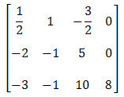
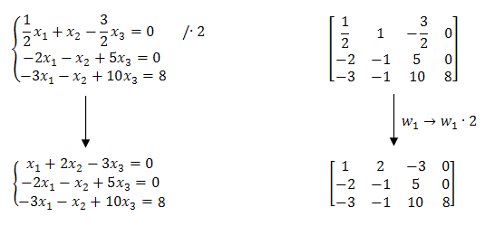
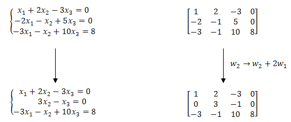
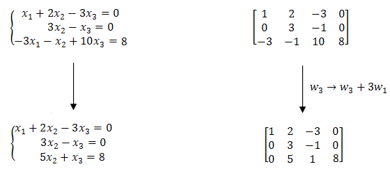
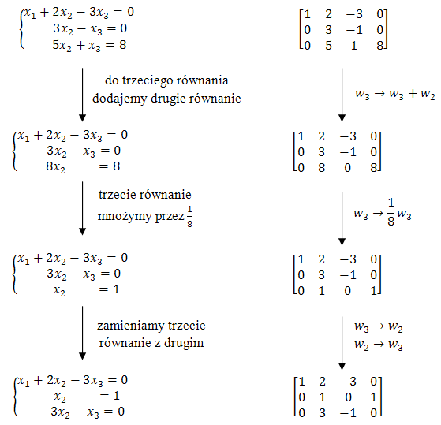
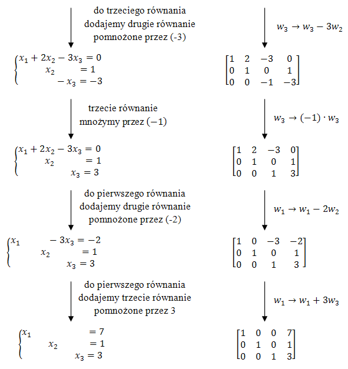
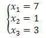

Danemu układowi równań odpowiada następująca macierz: 
Wykonamy teraz kilka operacji elementarnych na równaniach układu i
jednocześnie na wierszach odpowiadającej mu macierzy.
Na początku pomnóżmy pierwszy
wiersz przez liczbę \(2\): 
Napis \(w_1 \rightarrow w_1\cdot 2\) jest symbolicznym zapisem tego, że
"wiersz pierwszy przekształcamy w wiersz pierwszy pomnożony przez \(2\)".
Teraz do
drugiego wiersza dodajemy pierwszy wiersz pomnożony przez \(2\):  W wyniku powyższej operacji pozbyliśmy się jednej niewiadomej z drugiego
równania.
Teraz pozbędziemy się niewiadomej \(x_1\) z trzeciego równania. W tym celu do
trzeciego równania dodajemy pierwsze równanie pomnożone przez \(3\):  Teraz będziemy pozbywać się kolejnych niewiadomych maksymalnie upraszczając układ
równań (oraz macierz). Wykonywane operacje elementarne będą zapisywane przy strzałkach.
  Wykonanie wszystkich powyższych operacji
elementarnych doprowadziło nas do rozwiązania układu równań:  Ciągłe przepisywanie całego układu równań jest dość
czasochłonne. Dlatego warto wykonywać działania jedynie na macierzy odpowiadającej danemu
układowi, aby na końcu tylko odczytać z niej rozwiązanie.
Przy takim podejściu całe
zadanie sprowadza się do przekształcenia macierzy na
postać schodkową
zredukowaną. Z takiej postaci od razu widać rozwiązania układu równań.